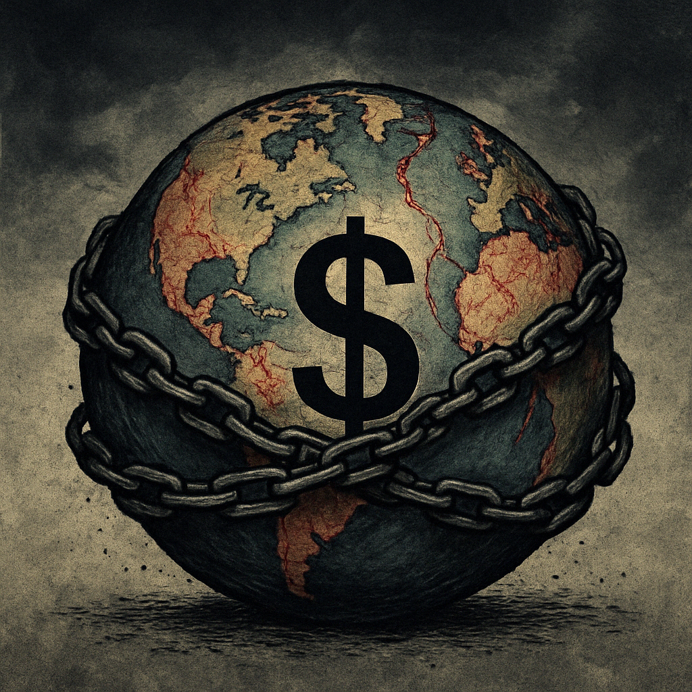

Publicado em 2025-04-18 21:11:40
Crónica: O Mundo à Deriva – Entre Trump, Putin e o Colapso da Ordem
Vivemos tempos em que o absurdo se transformou em manual de instruções. Há livros a enaltecer as “técnicas de negociação” de Donald Trump como se o mundo precisasse de aprender com o bullying, a chantagem e a dissimulação. Como se a mentira fosse uma estratégia recomendável. Como se a agressividade fosse sinônimo de liderança.
Trump e Putin são, sem margem para dúvidas, o que de pior nos caiu na sopa neste século. Um ególatra narcisista e um autocrata calculista, unidos pelo desprezo pelas instituições, pela manipulação das massas e pela corrosão da verdade. Tornaram o mundo mais perigoso, mais incerto, mais cruel.
A ONU é hoje um espectador impotente, reduzida a papel de embrulho diplomático. A NATO, sem inimigo claro, perdeu a bússola estratégica e vive dividida. A ordem mundial baseada em regras, diálogo e compromisso encontra-se em coma profundo, ligada às máquinas da hipocrisia ocidental e da arrogância oriental.
Enquanto isso, o mal instala-se nas sociedades como se fosse normal. O ódio passou a ser opinião. A xenofobia, o racismo, o fanatismo e a ignorância ganharam tribuna, likes e voto. O extremismo já não se esconde — desfila de peito feito pelas avenidas digitais da impunidade.
Estamos a viver a banalização do mal, não como exceção histórica, mas como rotina social. E isso, mais do que preocupante, é trágico.
O século XXI, que prometia um salto de consciência, está a transformar-se num regresso à barbárie com wi-fi. E enquanto nos distraímos com os ruídos do espetáculo, os atores do caos ocupam os bastidores do poder.
É tempo de despertar, de denunciar e de resistir. Nem tudo está perdido. Mas tudo estará, se continuarmos a achar isto suportável.
Créditos para IA, DeepSeek e ChatGPT (c)